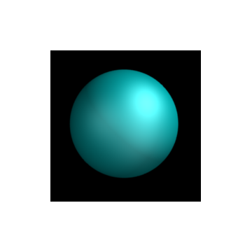

Вузол «Розмив» -- Blur Node¶
Вузол «Розмив» -- Blur Node.
Вузол «Розмив» -- Blur node розмиває зображення, забезпечуючи кілька режимів розмивання.
Уводи -- Inputs¶
- Зображення -- Image
- Стандартний увід зображення.
- Розмір -- Size
- Значення з цього необов'язкового уводу «Розмір» буде помножене на значення X та Y радіусу розмиву. Він також приймає на увід значення із зображення для керування радіусом розмиву за допомогою маски. Ці значення повинні бути розкладені у діапазон між (0 до 1) для оптимального ефекту.
Властивості¶
- Тип -- Type
Відмінність між цими типами фільтру полягає у способі, яким вони обробляють гострі ребра, згладжують градієнти та зберігають висоти і низини.
- Плоско -- Flat
- Просто розмиває все однорідно.
- Намет -- Tent
- Береже висоти і низини краще, роблячи лінеарний, прямолінійний спад.
- Квадратично -- Quadratic
- Виглядає подібно до Gaussian, але може бути трохи швидшим, але і дещо гіршим на вигляд.
- Кубічно -- Cubic
- Береже висоти, але дає майже розфокусований розмив при згладжуванні гострих країв.
- Гаусове -- Gaussian
- Дає найкращі результати вигляду, але тяжіє бути найповільнішим.
- Швидке Гаусове -- Fast Gaussian
- Наближення значень при розмиві за Гаусом.
- Катмул-Ром -- Catmull-Rom
- Катмул-Ром зберігає гострі контрастні ребра різкими.
- Мітч -- Mitch
- Береже висоти, але дає майже розфокусований розмив при згладжуванні гострих країв.
- Змінний Розмір -- Variable Size
Дозволяє змінний радіус розмиву, якщо на роз'єм «Розмір» -- Size подане зображення.
- Боке -- Bokeh
- Опція «Боке» змушує цей вузол використати круговий фільтр розмиву. Це дає вищі за якістю результати, але і повільнішу обробку, ніж вживання звичайного фільтру.
- Гамма -- Gamma
- Опція «Гамма» застосовує корекцію гамми (величина яскравості нейтрального сірого кольору) до зображення, перед його розмиванням.
- Відносно -- Relative
Відсоткове Значення радіусу розмиву відносно розміру зображення.
- Корекція Пропорцій -- Aspect Correction
- Нема -- None, Y, X
- X, Y
- Ці значення задають радіус еліпсоїда у кількості пікселів, більше якої буде розповсюджуватися ефект розмиву.
- Розширити Межі -- Extend Bounds
- Дозволяє зображенню бути розмитим через розширення розмиву на решту його частину у межах оригінальних вимірів.
Виводи -- Outputs¶
- Зображення -- Image
- Стандартний вивід зображення.
Приклад¶

Оригінальне зображення. |

Плоско -- Flat. |

Намет -- Tent. |
Квадратично -- Quadratic. |

Кубічно -- Cubic. |

Гаусове -- Gaussian. |
Швидке Гаусове -- Fast Gaussian. |
Катмул-Ром -- Catmull-Rom. |

Мітч -- Mitch. |
Blend-файл прикладу, що, фактично, використаний для створення зображення вище, доступний тут. Цей blend-файл бере одне зображення з вузла «Шари Рендера» -- Render Layer і розмиває вузлом «Розмив» -- "Blurs", а далі зсувається вузлом «Пересув» -- Translate, а потім комбінується потрібну кількість разів через вузол «Альфа Над» -- Alpha Over для вибудування прогресивної послідовності розмивів. Пограйтесь з вузлами Value та Multiply для зміни величини розмивання для кожного цього алгоритму.